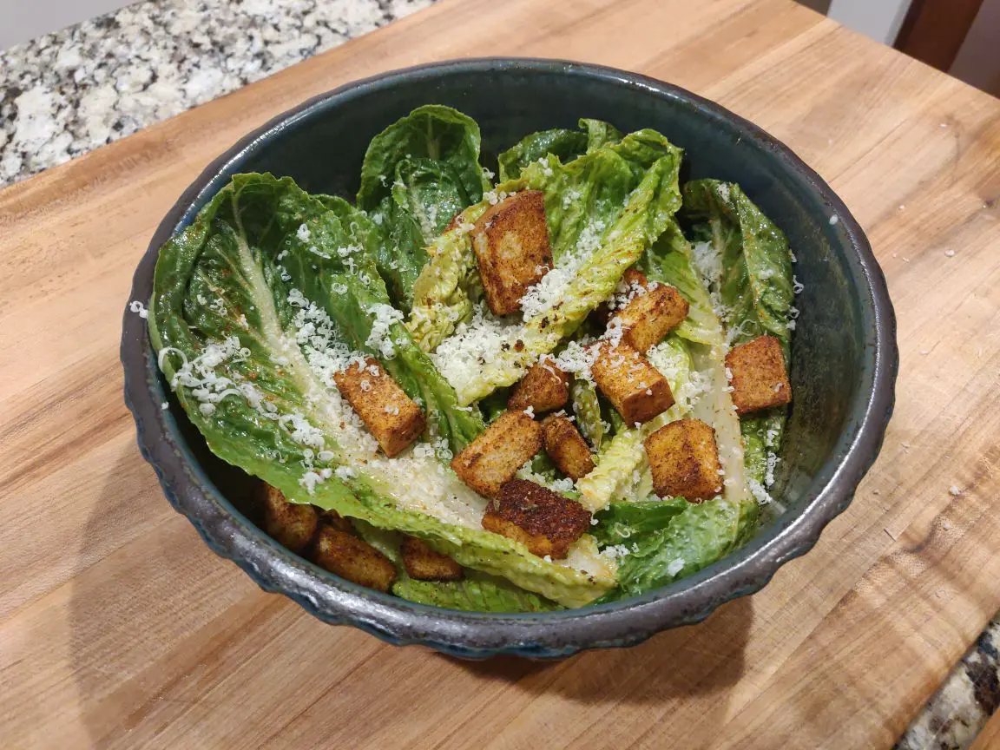

Caesar Salad

Caesar Salad is an easy and delicious meal for lunch or dinner.
Ingredients
- Romaine Lettuce
- Grated Parmesan Cheese
- Croutons
- Caesar Salad Dressing
Directions
- Prepare a whole head of Romaine Lettuce by chopping off the root and rising thoroughly with water. Dry completely.
- Once the lettuce is fully dry, put in a mixing bowl with lettuce and the Caesar Salad dressing. Toss to cover each leaf completely.
- Add croutons.
- Grate Parmesan over salad.
- Eat with hands.
Contributors
- gucko
Recipe tags: italian, salad, cheesefare